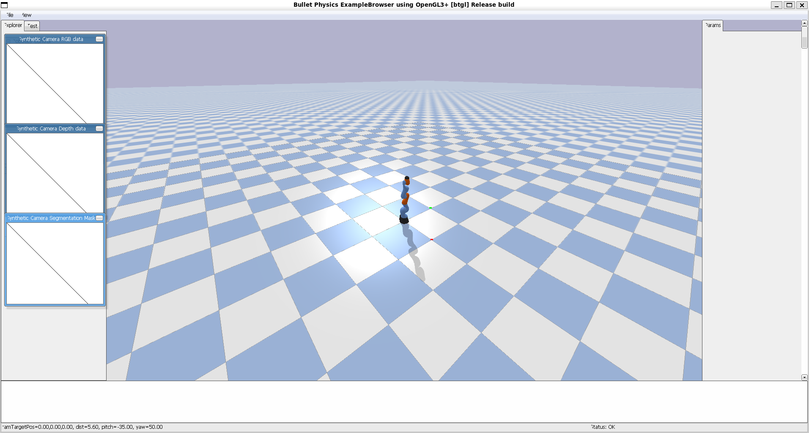
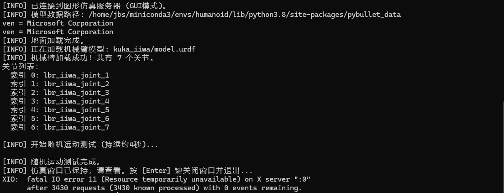

ROS系统安装配置过程
我现有的配置是Windows 11 + WSL 2 (Ubuntu 22.04)，目标是人形机器人（上肢）仿真
一、一键安装ROS
使用国内社区维护的“鱼香ROS”一键安装脚本
终端运行
wget http://fishros.com/install -O fishros && . fishros
可能遇到的问题：
1.系统提示需要换源
选择换源（由于我默认是清华源，没有换源）
2.选择ROS镜像源
选择（1）中科大镜像源
脚本安装的是 ROS 2 (Humble)，而非旧版ROS 1。安装完成后，脚本已自动帮我把环境变量配置写入 ~/.bashrc
二、创建环境以及基础库的安装
利用已经下载好的miniconda管理环境
# 创建环境conda create -n humanoid python=3.8
然后激活环境
conda activate humanoid
安装torch等基础库
pip install numpy torch torchvision
安装pybullet
pip install pybullet
安装底层图形库
echo "=== 系统与Python ==="
lsb_release -d
python3 --version
echo -e "\n=== 关键Python库 ==="
pip list | grep -E "(numpy|torch|pybullet)"
echo -e "\n=== ROS 2 环境 ==="
echo $ROS_DISTRO
ros2 --version 2>/dev/null && echo "ROS 2 OK" || echo "ROS 2 Not Found"
echo -e "\n=== PyBullet 测试 ==="
python3 -c "import pybullet as p; print('PyBullet API Version:', p.getAPIVersion())"
三、编写一个仿真脚本已验证功能
我一开始是利用ai写的脚本，想要调用一个UR5的机械臂，但是pybullet自带的data库里没有UR5，于是改用调用kuka_iiwa
import pybullet as p
import pybullet_data
import time
import numpy as np
def main():
print("="*60)
print("开始最终仿真环境验收测试")
print("="*60)
# 1. 连接引擎，兼容无图形界面情况
try:
physicsClient = p.connect(p.GUI)
print("[INFO] 图形模式 (GUI) 已启动。")
except Exception:
print("[INFO] 图形模式失败，切换到直接计算模式 (DIRECT)。")
physicsClient = p.connect(p.DIRECT)
# 2. 配置路径和场景
p.setAdditionalSearchPath(pybullet_data.getDataPath())
p.setGravity(0, 0, -9.8)
p.loadURDF("plane.urdf")
print("[INFO] 地面加载完成。")
# 3. 加载一个确定存在的机器人模型
robot_urdf = "kuka_iiwa/model.urdf" # 核心：使用已验证存在的模型
print(f"[INFO] 正在加载模型: {robot_urdf}")
robot_id = p.loadURDF(robot_urdf, basePosition=[0, 0, 0])
num_joints = p.getNumJoints(robot_id)
print(f"[SUCCESS] 模型加载成功！关节数: {num_joints}")
# 4. 进行简单的运动测试
print("[INFO] 开始随机运动测试...")
for _ in range(100):
for j in range(num_joints):
if p.getJointInfo(robot_id, j)[2] != p.JOINT_FIXED:
target = np.random.uniform(-1.0, 1.0)
p.setJointMotorControl2(robot_id, j,
p.POSITION_CONTROL,
targetPosition=target,
force=50)
p.stepSimulation()
time.sleep(1./240.)
# 5. 保存测试结果截图（即使无GUI也尝试）
print("[INFO] 测试完成，尝试保存截图...")
try:
view_matrix = p.computeViewMatrixFromYawPitchRoll(
cameraTargetPosition=[0,0,0.5], distance=1.5, yaw=60, pitch=-30, roll=0, upAxisIndex=2)
proj_matrix = p.computeProjectionMatrixFOV(fov=60, aspect=1.33, nearVal=0.1, farVal=100.0)
width, height = 640, 480
img = p.getCameraImage(width, height, view_matrix, proj_matrix,
renderer=p.ER_BULLET_HARDWARE_OPENGL)
# 此处可添加用PIL或OpenCV保存img[2]（RGB数组）的代码
print(f"[SUCCESS] 截图已渲染，可保存。")
except Exception as e:
print(f"[NOTE] 未保存截图: {e}")
# 6. 清理与退出
p.disconnect()
print("="*60)
print("环境验收测试全部通过！")
print("你的机器人仿真环境已完全就绪。")
print("="*60)
if __name__ == "__main__":
main()
nano test_arm_simulation.py，然后把上面这段代码粘贴进去，然后Ctrl X，然后Y确定，然后Enter保存
在环境中，输入python test_arm_simulation.py以运行
然后发现出现如图窗口

终端显示
则验证成功四、遇到的问题
在仿真窗口只能利用滚轮放大缩小，按理来说应该可以利用左键平移，但是不行，可能是输入命令有冲突，暂时没有解决，打算在仿真开始后遇到再解决